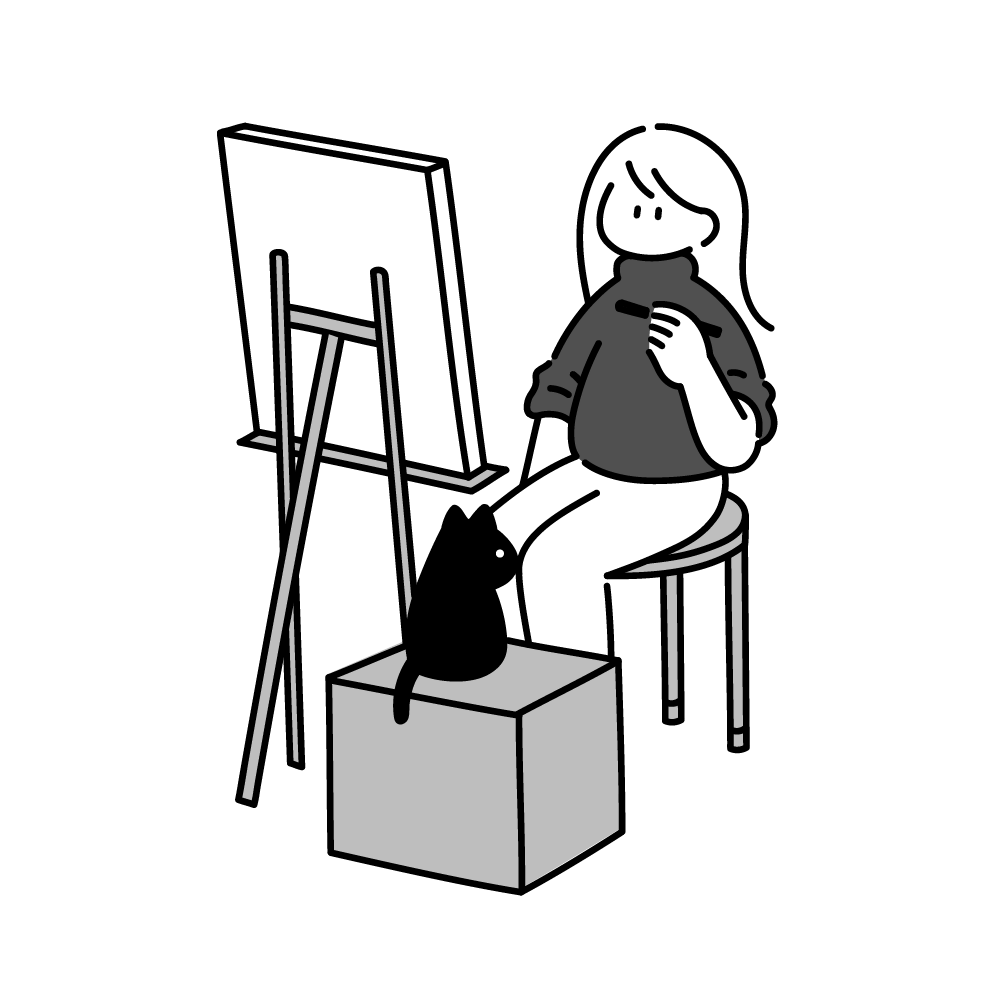
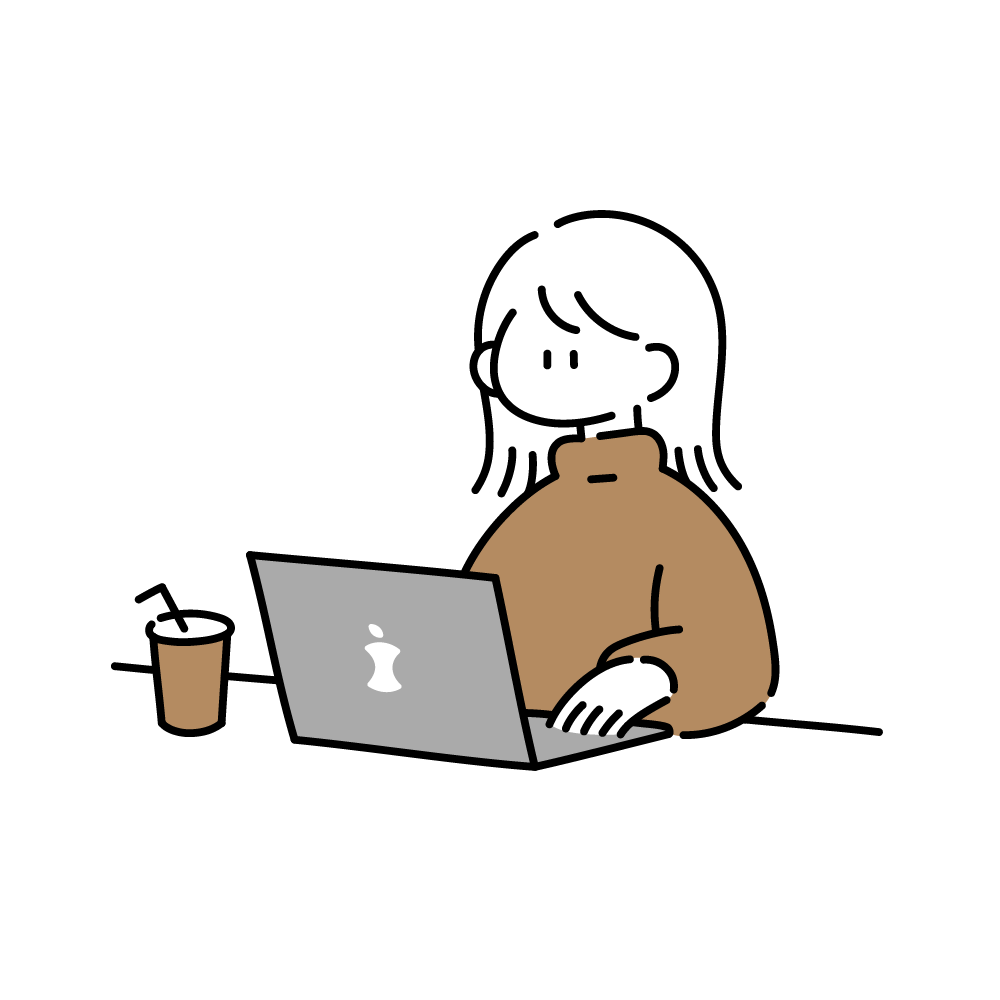

わたしについて

はしもと ゆい
Hashimoto Yui
1998.06.15生まれ 27歳
建設機械のレンタルサービス業界にて営業事務として勤務する中で、以前より興味のあったWebデザインの分野へ進むことを決意しました。
幼い頃からものづくりが好きで、ポスターや遠足のしおり制作を心から楽しんでいました。
これらの経験が、情報を五感に訴えることができるデザインへの関心へとつながっています。
現在はWebデザインについて学びながら、動画作成やイラスト制作にも力を入れています。
前職で培った提案力、そして動画制作やプレゼンで培った表現力を活かし、「誰かの人生をより豊かにするデザイン」を届けられるWebデザイナーを目指しています。
できること
デザイン
Webサイトのデザインを制作することができます。
ジャンルにとらわれず、様々なテイストのデザインを制作します。
ユーザーに負荷がかからないような、わかりやすいデザインを心がけています。
足りないパーツをイラストで補うことも可能です。
-
Illustrator
チラシ・名刺・イラスト・ロゴ・バナーなどの制作ができます -
Photoshop
画像の補正、切り抜きなど簡単な写真加工ができます -
Figma
Webデザイン制作に使用しています。
簡単な動きをつけたデザインカンプの制作ができます -
ibisPaintX
イラスト・ロゴの制作ができます

コーディング
HTML/CSSを用いて、デザインカンプを忠実に再現することができます。
また、JavaScriptを用いて動きをつけることも可能です。
疑問点はAIを活用しながら試行錯誤して進めています。
誰が見てもわかりやすいコードを書くことを心がけています。
-
HTML / CSS
わかりやすいコーディングを行うことができます。
エディターはSublime Textを使用しています -
JavaScript
簡単な動きを加えることができます

わたしの強み
いつも和やか
和やかな雰囲気づくりを大切にし、周囲が安心して意見を出せる環境を心がけています。
学生時代は放送部に全力を注ぎ、皆の意見を取り入れた作品で
NHK全国大会2位を獲得しました。
ひとりでは難しいことも、チームの力で実現できると実感しました。
企画力がある
大学サークルの合宿や忘年会など、
10〜20人程度で楽しめるイベントを企画してきました。
人を集めて段取りをすることが得意です。
ひとりで全体を引っ張るのではなく、
周囲の要望を取り入れながら実現していきます。
ニーズを汲み取る力
プレゼント選びが好きで、
その人が喜ぶものを覚えているとよく褒めていただけます。
特に女性へ贈り物をする機会が多く、
化粧品検定1級を取得しました。
この力は会社でのプレゼンや資料作成にも役立っていると感じます。